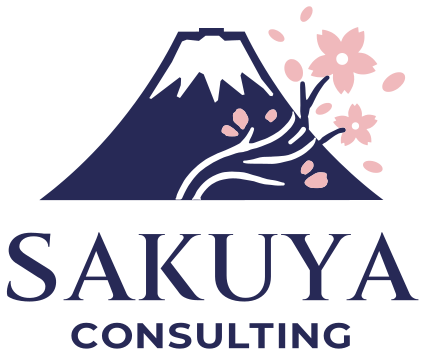
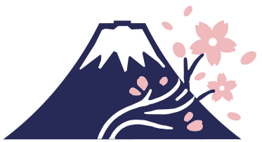
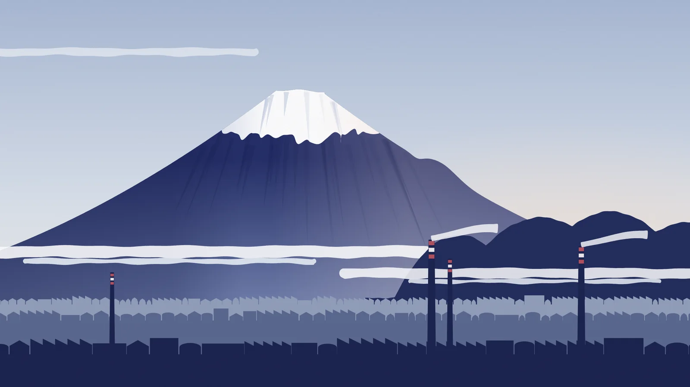
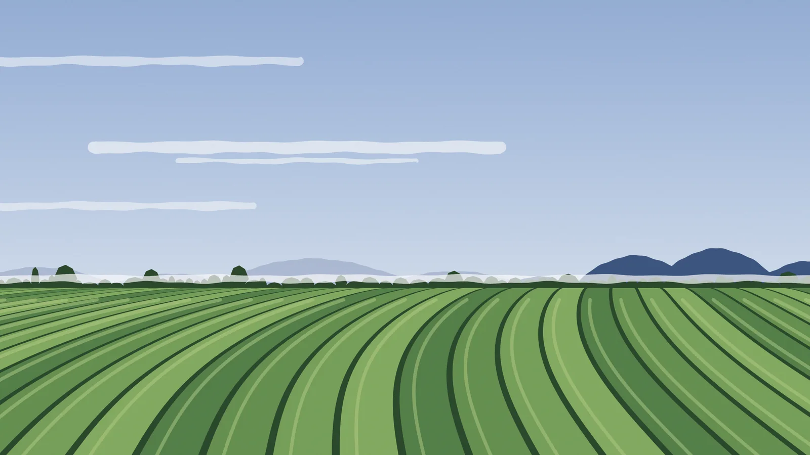
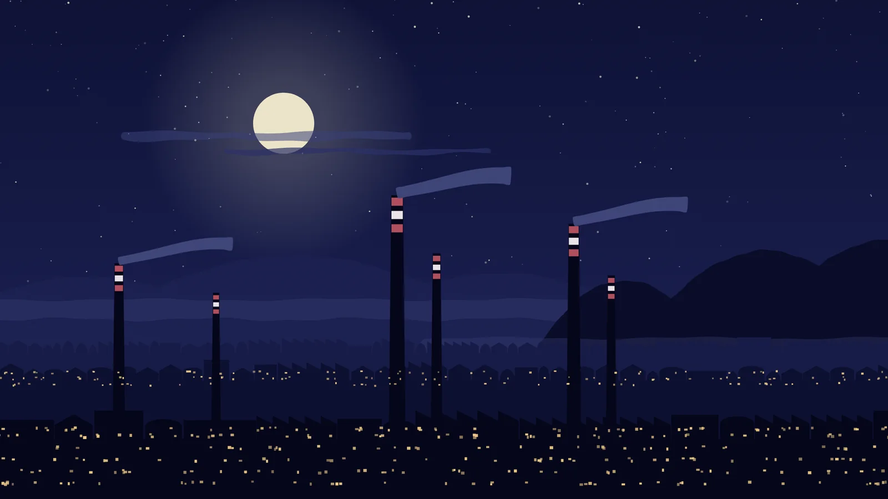
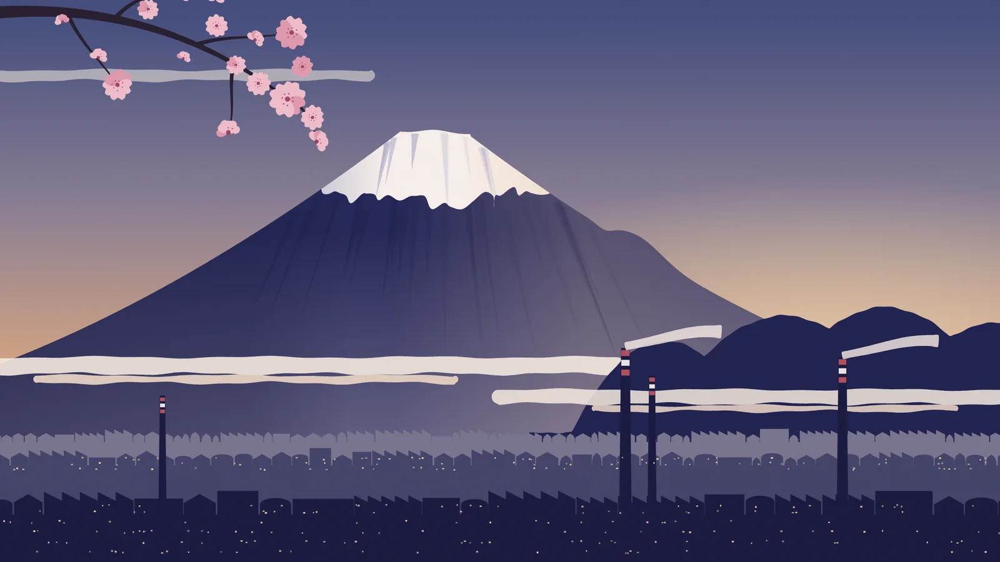

社名の由来
社名の「さくや」は、富士山の御祭神・木花咲耶姫に由来します。「耶」が漢文で疑問を表すことにちなみ、「咲くかな？」という問いから支援を始めます。
強みを見つけ、枝を整え、戦略と実行で花を増やす。ロゴの桜の花を少なめに描くことで、今は蕾でも、これから共に多くの花を咲かせるという約束を表しています。

さくやコンサルティング合同会社
富士市から見た、夜明けの富士。右の中腹のこぶが宝永山、右手前の山が愛鷹山です。
静岡県富士市の、小規模事業者のための総合コンサルティング会社です。富士・富士宮を中心に、事業者の「やりたいのに進まない」を、一つの窓口で、計画から実行まで一緒に進めます。
当てはまるものを押すと、その分野を選んだ状態で、ページの下の受付に進みます。
大切にしていること

社名の「さくや」は、富士山の御祭神・木花咲耶姫に由来します。「耶」が漢文で疑問を表すことにちなみ、「咲くかな？」という問いから支援を始めます。
強みを見つけ、枝を整え、戦略と実行で花を増やす。ロゴの桜の花を少なめに描くことで、今は蕾でも、これから共に多くの花を咲かせるという約束を表しています。
制度、事業、評価、AI。一つひとつに専門家がいても、つなぐ人がいなければ事業は動きません。当社は、計画から実行、効果の確かめ、次の一手までを、一つの窓口で支えます。
官公署に出す書類の作成と提出の代理（行政書士の業務）、雇用関係の助成金の申請書類の作成（社会保険労務士の業務）は、お引き受けしていません。必要なときは、ご同意のうえで専門家（行政書士・社会保険労務士・弁護士など）にお引き継ぎします（代表は行政書士登録準備中です）。
定款の作成や登記の申請など、設立の書類の作成と手続きは、専門家（行政書士・司法書士など）にお引き継ぎします。
お渡しするもの月次の面談と、改善の進み具合の管理
助言だけで終わらせず、事業者と一緒に手を動かす実行パートナーとして、新しい商品・メニュー・サービスの企画から、販売の道筋づくり、試しの販売、改善までを一貫して支えます。
補助金は手段であって、目的ではありません。補助金がなくても成り立つかを、先に一緒に確かめます。
日本評価学会の認定評価士が担当します。
「やった」と「効果があった」は違います。活動の量だけでなく、相手に起きた変化を確かめます。
外部評価では評価者の独立性を守るため、評価する事業の申請書づくりには関わりません。独立性を保てない案件はお引き受けしません。
予約や問い合わせへの対応、文書作成、販促、マニュアル化、接客の省力化など、現場の課題に合わせてAIとデジタルツールを選び、日々の業務に定着させます。
小さな会社の業務に合わせた、身の丈の業務アプリを作ります。AIを開発に使い、期間と費用を抑えることを目指します。
テーマの例：生成AIの基礎と安全な使い方／AIを組み込んだ業務の流れ／業務改善の始め方／補助金・助成金の基礎／事業開発の進め方／評価とKPIの考え方／AIをめぐる職場の行き違いへの備え／事業承継の基礎
お渡しするもの研修の資料と、実演
チラシや店頭ポップ、SNSなどの発信を、AIも使って、少ない手間で続けられる形にします。
初回のご相談（30分）は無料です。相談する

富士市の茶畑、昼。
まず、現状と困りごとをうかがいます。
課題と、使える手段を整理します。
実際に動くところまで、ご一緒に進めます。
振り返りと改善を重ね、社内で続けられる形にします。
4つ目の「定着させる」では、決めた指標で成果を確かめ、次の計画に生かします。

AnthropicのClaudeを業務の中核に置き、調査、資料の作成、検品、記録をAIが担い、人は判断と最終確認に集中しています。自社で確かめた手順を、小規模事業者でも続けられる形にして、研修と導入支援でお伝えします。
開発中のゲームの画面押すと大きく表示します
制作中
十五夜までに、未来を書き換えろ
富士のふもとの町工場を舞台にしたRPGを、AIと一緒に作っています。AIに頼りきりになって止まってしまった60年後の町から、ひとりの少女が光る竹に乗ってやってくる。町工場の親子二代が、AIを「使う」側に立ち、十五夜までに未来を書き換える物語です。
先代の口ぐせは「道具に使われるな。道具は、使え。」。遊んでいるうちに、AIとの付き合い方が自然と身につく。そんなゲームを目指しています。
映像は、ゲームのオープニングです（約1分35秒、音が出ます）。その下は、開発中のゲームの実際の画面です。絵、動画、歌は生成AIで作り、物語と演出は代表が決めています。どれもまだ作っている途中のものです。
社内の記録では、AI社員は1週間に43件の仕事を受け付けました（社内の仕組みづくりを含みます）。同じ週に完成した仕事は19件です。人が見ていない夜の定期実行で、AIが仕事を進めたのは20回。確定は、人が確かめてから行います。1時間のうちに同時に動いたAIの作業は、最多で10本です。
社内の記録（2026年10月19日〜25日）から。記録を残したものだけを数えた目安です。
制度の情報、案件、書類の確認、期限を一元管理
62の工程に沿って、分析から計画書・収支表までを作る。本文と表の数字の食い違いを確かめるしくみ
質問票の回答から、AI・DXの成熟度と、優先する施策、提案書を作る
業績測定、プログラム評価、社会的インパクト評価を、正しい手順で進めるための道具
会社をご案内するAIキャラクター。このページのお問い合わせの欄で、ご案内とご相談の受付をしています
業務アプリと自社ツールは、AnthropicのClaude Codeを使って開発しています。
ClaudeはAnthropic PBCの製品です。当社はAnthropicの提携企業ではありません。
7つの質問に「はい」か「いいえ」で答えると、AI活用の8段階のうち、いまの段階と次の一歩が分かります。1分ほどで終わります。答えは、このページの中だけで使い、どこにも送りません。
週に何度か、仕事の文章や資料の下書き、整理をAIに頼んでいる（たまに質問するだけ、ではない）
このチェックにはJavaScriptを使います。下の「8段階の一覧と、7つの質問」でも、同じように確かめられます。
段階が上ほど良い、というものではありません。仕事の中身によって、ちょうどよい段階は違います。段階を上げるほど、AIに任せる幅が広がる分、確かめ方と記録の仕組みが大事になります。
元は、アメリカのプログラマー、スティーブ・イェギ（Steve Yegge）が、AIにプログラムを書かせる段階として示した8段階です（2026年1月1日の記事「Welcome to Gas Town」）。当社が、経営者の仕事に置き換えました。
段階1AIはほとんど使わない
段階2AIは手伝い。一つずつ確かめて使う
段階3確かめを減らし、任せる幅を広げた
段階4作るのはAI、自分は結果を確かめる係
段階5AIが主役で、途中はあまり見ない
段階6複数のAIを同時に動かす
段階7多くのAIを手で回し、管理が限界に近い
段階8AIに仕事を回す仕組みを自分で作っている
Q1から順に答え、「いいえ」が出たところで止めます。最後に「はい」と答えた質問の番号に1を足した数が、いまの段階です（Q1が「いいえ」なら段階1、Q7まで「はい」なら段階8）。
事業計画と評価
2026年
観光と商品の企画
刀剣文化、滝と伝承、地域のキャラクターなど
2026年
DX・業務改善
勤怠の記録と社内の申請をウェブで済ませるアプリの開発
2026年
販促
2026年
研修・講師
「AI時代の経営実務 ― 生成AI・ハラスメント対応・事業開発・KPIを経営に活かす」。物語動画の上映と、AIを組み込んだ業務の流れの実演
2026年7月
AIでの制作
2026年6月
代表社員
春山大祐
Daisuke Haruyama
静岡県富士市出身。東北大学法学部卒業。
コンサルティング会社で、国の補助事業（観光庁、国土交通省、経済産業省など）や休眠預金活用事業について、事業者へのヒアリングから計画の立案、経費の積算、実行支援、完了報告までを一貫して担当しました。観光・文化事業の効果測定と評価報告書の作成、観光地域づくり法人（DMO）の設立の調査も担いました。
2026年、富士で当社を設立しました。法律の素養を生かして制度のしくみを読み解き、専門家の領分との線を守って進めます。公的な無料相談で方向が見えたあとの、導入・定着・評価までを担います。
| 商号 | さくやコンサルティング合同会社 |
|---|---|
| 代表 | 代表社員 春山 大祐 |
| 設立 | 2026年 |
| 所在地 | 静岡県富士市 |
| 事業内容 | 制度活用支援、法人の設立支援、経営実行伴走・顧問、事業開発・商品開発支援、評価・KPI設計支援、AI導入支援・業務改善、業務アプリの開発（DX推進の支援）、研修・セミナー、販促・情報発信の支援 |
| 対象地域 | 富士市・富士宮市を中心とする静岡県東部（ほかの地域も、オンラインや出張で承ります） |
| 取り組み | パートナーシップ構築宣言を公表しています（ポータルサイトに掲載） |
初回のご相談（30分）は無料です。そのあとの診断や支援の料金は、ご相談の内容をうかがったうえでご案内します。
このページのお問い合わせの欄で、AI受付の木葉の質問に順にお答えください。ご相談の内容を、代表の春山にお届けします。
採択のお約束はできません。審査で決まるものだからです。当社は、事業の目的に合った制度を探し、事業の進め方と経費の考え方を整理し、採択後、事業を実行するときに伴走します。
官公署に出す書類の作成や提出の代理は、行政書士の業務のため、当社ではお引き受けしていません（代表は行政書士登録準備中です）。制度の選び方、事業の進め方と経費の考え方の整理、採択後、事業を実行するときの伴走をお手伝いします。申請書や実績報告書に書く文と数字の作成は含みません。
もちろんです。補助金は手段であって、目的ではありません。補助金がなくても事業が成り立つかを、先に一緒に確かめます。
大丈夫です。まずは毎日くり返している作業を一つ選び、小さく試すところから始めます。使い方の研修や、導入後のフォローもあります。
入れてよい情報と入れない情報を、先に決めておくことが大切です。当社では、情報の扱いや人の確認の手順など、AIの使い方の社内ルールづくりもお手伝いします。
主な地域は、富士市・富士宮市を中心とする静岡県東部です。対象は、従業員30名以下の事業者と、NPO・地域団体です。ほかの地域の方も、オンラインや出張で承りますので、遠慮なくご相談ください。
はい。事業継続力強化計画など、国の認定制度を使った備えのご相談ができます。
Sakuya Consulting LLC is a full-service, AI-native consulting firm founded in 2026 in Fuji City, Shizuoka, Japan, at the foot of Mt. Fuji. We help small businesses with 30 or fewer employees, as well as nonprofits and community organizations, get unstuck and move forward by connecting public support programs, day-to-day operations, and digital tools. Our main area is eastern Shizuoka, and we also work with clients elsewhere, online or on site.
Anthropic’s Claude is at the core of how we work. We run Claude as an “AI staff member”: each task is logged, given acceptance criteria up front, drafted and checked by AI, cross-checked by a different AI model, and then reviewed by a person, who makes the final decision. We are building our business apps and in-house tools with Claude Code.
Our services include guidance on public support programs, help with incorporating a business, new business and product development, evaluation and KPI design (led by an evaluator certified by the Japan Evaluation Society), AI adoption and workflow design, custom business apps, training, marketing support, and ongoing advisory services.

「何から相談すればよいか分からない」という段階でかまいません。現状をお聞きするところから始めます。
AI受付春山木葉
木葉にふれると、あいさつします。質問だけでも大丈夫です。声：VOICEVOX:雨晴はう
木葉の答えは、人の確認を通らないご案内です。正式なお答えは、代表の春山からになります。
AI受付 春山木葉
4つの質問（1〜2分）。この受付からAIには送りません。代表の春山が読みます
入力いただいた内容は、ご相談へのお返事と日程の調整、ご依頼後の連絡に使います（個人情報の取り扱い）。マイナンバー、口座番号、パスワード、病歴などは書かないでください。
さくやコンサルティング合同会社（以下「当社」）は、お客さまからお預かりする個人情報を、次のとおり取り扱います。
このページの受付でお知らせいただく、お名前・事業者名、ご連絡先（メールアドレスまたは電話番号）、ご相談の分野と内容です。あわせて、受付の日時と送信元のページを記録します。ご依頼をお受けしたあとは、業務に必要な範囲で情報をお預かりします。受付は決まった順にお聞きする仕組みで、送信の操作をするまで、入力した内容はどこにも送られません。
ご相談へのお返事と日程の調整、ご依頼いただいた業務の実施とそのための連絡、研修・セミナーの運営と参加者へのご連絡、取引先とのご連絡、契約の手続きと請求・お支払いに使います。法令で認められる場合を除き、これ以外の目的には使いません。
法令で認められる場合を除き、ご本人の同意なく第三者に提供しません。ご相談の内容によって、専門家にお引き継ぎするときは、事前にご本人の同意をいただきます。
このページの受付は、入力した内容をAIに送りません。ご相談は、Googleのサービス（Apps Script、Gmail）を通して当社に届きます。業務では、メール、文書の保管、生成AIなどの外部のクラウドサービスを使います。生成AIは、入力した情報をサービスの提供者が学習などに使わない設定や契約のものに限り、目的に必要な範囲の情報だけを入れます。
漏えい、滅失、毀損を防ぐため、次の措置をとっています。代表を責任者とし、取り扱いのルールを定めています。個人情報を保管するアカウントは二段階認証で守り、見られる人を限っています。書類や機器の紛失と持ち出しを防ぎます。主に米国の事業者（Google LLCなど）のクラウドサービスを使っており、国外のサーバーで情報が扱われることがあるため、サービスのある国（主に米国）の個人情報の保護の制度を確かめたうえで、これらの措置をとっています。
開示、訂正、利用の停止などのご請求と、個人情報の取り扱いについての苦情は、このページの受付の「個人情報についてのご請求・苦情はこちら」からお申し出ください。当社が記録しているご連絡先にご連絡するなどして、ご本人であることを確かめたうえで、法令に従って対応します。手数料はいただきません。
さくやコンサルティング合同会社 代表社員 春山 大祐
所在地：静岡県富士市（くわしい住所は、お求めに応じて遅滞なくお知らせします）
この取り扱いは、法令の改正や業務の変更にあわせて改めることがあります。